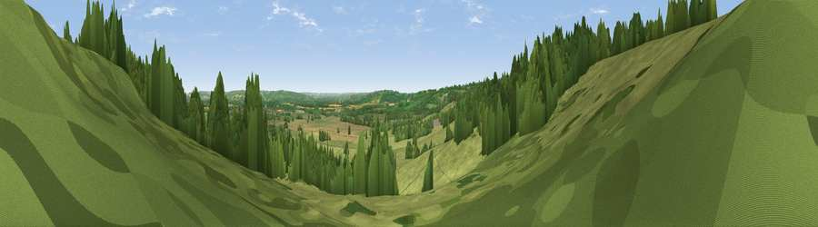

Viewpoint near Bourton-on-the-Hill
#28541 in England · top 59% of its area beats it · near Bourton-on-the-HillWhere it is
The exact computed spot (SP 17932 33474). Click the marker for map links.
The view, rendered

A 360° render of this exact spot computed from the terrain model, tree cover and land cover — summer colours, afternoon light, calibrated against photographs of famous viewpoints. Real trees, hedges and buildings will differ in detail.
The panorama
Grey silhouette: terrain skyline in each direction (720 bearings, Earth curvature and refraction included). Dashed green: skyline with trees (+15 m) and buildings (+8 m) as obstacles. Blue strip: how far the ground is visible on each bearing.
Where the view opens
Wedge length = distance to the farthest visible ground on that bearing (vegetation-aware). Rings at 10, 25 and 50 km.
What fills the view
59% grassland · 25% woodland · 15% cropland · 1% built-up
Angular shares of the visible panorama (visual magnitude), not map area. Landscape diversity 0.43 (0–1 Shannon).
Key numbers
More beautiful places nearby
The staircase of upgrades: each row has a higher view potential than everything closer. Driving times are estimates from straight-line distance, calibrated against real road routing — check an actual route before setting out.
| Place | Direction | Drive | Score |
|---|---|---|---|
| Viewpoint near Bourton-on-the-Hill | NNW · 1 km | ~2 min | 56.0 |
| Viewpoint near Aston Magna | NNE · 1 km | ~3 min | 59.5 |
| Broadway Hill | WNW · 7 km | ~15 min | 77.7 |
| Nottingham Hill | WSW · 21 km | ~35 min | 80.9 |
| Bredon Hill | WNW · 23 km | ~38 min | 83.0 |
| Black Hill | W · 42 km | ~61 min | 83.1 |
| Pinnacle Hill | WNW · 42 km | ~62 min | 85.7 |
| Millennium Hill | W · 42 km | ~62 min | 86.9 |
51.99942, -1.74022 · source: osm viewpoint · position refined by local search. Computed location — check access rights before visiting.